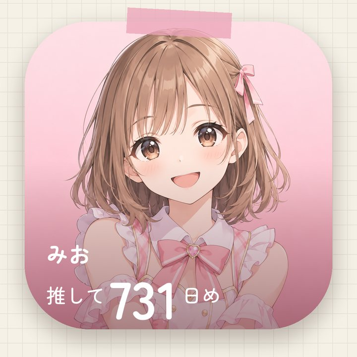
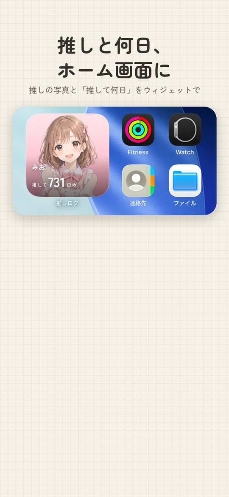

OSHIKATSU LOG
推し活、
ぜんぶ残る。
物販で買ったもの、遠征費、チケットの当落と入金。
推しを想った時間とお金を、数秒で手帳に。
広告なし記録は端末の中書き出し・復元は無料

手帳みたいに、書いて、見返す
使い込んだ方眼ノートのような画面です



推し活のための3つ
ふつうの家計簿では「娯楽費」にまとまってしまうものを、推しごとに
物販の列を離れたら、数秒で
金額と「どこで」だけで記録。チケット・グッズ・遠征・配信・CD・コラボカフェに分けて、推しごとに自動でまとまります。
当落と入金を、忘れない
予定に応募中・当選・落選を付けて、当落発表の前日にお知らせ。当選したら入金締切も残せます。
あとで誇れる記録に
ライブの翌日に「どうだった？」。月のはじめには先月が一冊にまとまり、これまで会いに行った回数と推した日数を振り返れます。
記録は、あなたのもの
- 広告も、ほかのアプリをまたぐ追跡もありません
- 記録はすべて端末の中に保存されます（Pro の iCloud 同期はあなたの iCloud に）
- 全データの書き出しと復元は、無料でいつでもできます
料金
無料
- 推し2人まで
- 今月と先月の見返し
- 当落・入金の記録、感想、共有カード
Pro 月額¥480／年額¥4,800
- 推し3人以上・推しカラー全12色
- それより前の月の見返し・CSV 書き出し
- iCloud 同期・入金締切のお知らせ
- 年額は1か月無料でお試し
よくある質問
無料のままでも使えますか？
はい。推し2人まで、今月と先月の記録はずっと無料です。
機種変更しても記録は残りますか？
設定の「バックアップファイルを作る」で全データを書き出し、新しい iPhone で開けば戻せます（無料）。Pro なら iCloud 同期もできます。
Android 版はありますか？
いまは iPhone だけです。